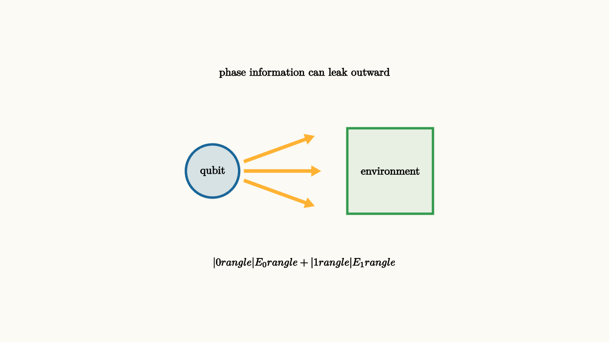

Quantum computing needs phase. Relative phase is what lets amplitudes interfere. The problem is that real qubits are never perfectly isolated. They interact with control wires, stray fields, vibrations, photons, nearby defects, and measurement devices. Those interactions can leak phase information into the environment.
Decoherence is this loss of usable phase relationship. It can happen without a scientist looking at the system. The room can become correlated with the qubit in a way that makes interference unavailable to the qubit alone.

source
background = [0.985, 0.98, 0.955, 1]
camera = Camera(4.8b)
mesh leak = block {
. fill{alpha{0.16} BLUE} stroke{BLUE, 3} center{[-1.45, 0, 0]} Circle(0.42)
. center{[-1.45, 0, 0]} Text("qubit", 0.62)
. color{ORANGE} Arrow(start: [-0.95, 0.15, 0], end: [0.15, 0.55, 0])
. color{ORANGE} Arrow(start: [-0.95, 0, 0], end: [0.25, 0.0, 0])
. color{ORANGE} Arrow(start: [-0.95, -0.15, 0], end: [0.15, -0.55, 0])
. fill{alpha{0.10} GREEN} stroke{GREEN, 3} center{[1.35, 0, 0]} Rect([1.35, 1.35])
. center{[1.35, 0, 0]} Text("environment", 0.62)
. center{[0, 1.55, 0]} Text("phase information can leak outward", 0.62)
. center{[0, -1.45, 0]} Tex("|0\\rangle|E_0\\rangle+|1\\rangle|E_1\\rangle", 0.60)
}
"decoherence"
play Fade(0.7)Suppose a qubit begins in
If the environment stays the same for both branches, the qubit can still interfere with itself. If the environment records which branch occurred, the joint state may look like
When $|E_0\rangle$ and $|E_1\rangle$ are distinguishable, the qubit alone behaves more like a classical mixture. The phase is still present in the full combined state, but it is spread into degrees of freedom we do not control.
One compact way to say the same thing uses a density matrix. A perfectly coherent plus state has off-diagonal terms:
Those off-diagonal entries carry phase coherence. Dephasing shrinks them:
When $c$ is near zero, the computational-basis probabilities may still be balanced, while interference has almost vanished.
Time scales matter
Experimental platforms describe decoherence with characteristic times. A $T_1$ time measures energy relaxation, such as a qubit in the excited state falling to the ground state. A $T_2$ time measures loss of phase coherence. Quantum gates must be fast and accurate compared with these time scales.
This is why quantum hardware is difficult. A good qubit must interact strongly enough to be controlled and measured, while weakly enough to preserve coherence during computation.
source
param coherence = 1.0
background = [0.985, 0.98, 0.955, 1]
camera = Camera(4.8b)
let Phase = |coherence| block {
. stroke{GRAY, 2} center{[-1.2, 0, 0]} Circle(0.85)
. color{BLUE} Arrow(start: [-1.2, 0, 0], end: [-1.2 + 0.78 * coherence, 0.45 * coherence, 0])
. center{[-1.2, -1.25, 0]} Text("coherent phase", 0.62)
. fill{alpha{0.12} ORANGE} stroke{ORANGE, 2} center{[1.25, 0, 0]} Rect([1.35, 1.0])
. center{[1.25, 0.18, 0]} Text("noise", 0.62)
. center{[1.25, -0.22, 0]} Text("records", 0.62)
. center{[0, 1.52, 0]} Text("usable phase shrinks as correlation leaks", 0.62)
}
"fresh qubit"
mesh scene = Phase(coherence: $coherence)
play Fade(0.6)
"after leakage"
coherence = 0.25
scene = Phase(coherence: $coherence)
play Lerp(1.2)
"refocus"
scene = block {
. center{[0, 1.45, 0]} Text("some slow phase drift can be refocused", 0.62)
. color{BLUE} Arrow(start: [-1.9, 0.3, 0], end: [-0.75, 0.75, 0])
. fill{alpha{0.16} GREEN} stroke{GREEN, 3} center{[0, 0.15, 0]} Rect([0.55, 0.46])
. center{[0, 0.15, 0]} Text("X", 0.62)
. color{BLUE} Arrow(start: [0.45, -0.45, 0], end: [1.65, 0.0, 0])
. center{[0, -1.15, 0]} Text("echo pulses reverse predictable dephasing", 0.62)
}
play Trans(1.0)The shrinking arrow is a picture of the qubit's usable coherence, not a claim that the quantum state literally loses length. The full state remains normalized. What shrinks is the phase information available when we look only at the qubit.
Some noise can be fought with pulse design. If the qubit accumulates an unwanted phase because its frequency is slightly shifted, an echo pulse can reverse the effect of slow drift. Faster or more complicated noise requires better materials, shielding, calibration, and eventually error correction. The common theme is the same: keep uncontrolled systems from learning which branch of the computation happened.
For algorithms, decoherence has a direct interpretation. Interference patterns rely on branches remembering their relative phase until they meet again. If the environment has become correlated with those branches, the reunion is incomplete. The dark bands fill in. The cancellation that was supposed to suppress a wrong answer leaves leftover probability. A long circuit therefore needs every layer to preserve coherence well enough for the final interference step to remain sharp.
This is why hardware papers care about both coherence time and gate fidelity. A long $T_2$ time gives phase more time to survive. High-fidelity gates avoid adding fresh errors while trying to control the qubit. Neither number alone tells the whole story, since a slow accurate gate can lose coherence and a fast sloppy gate can introduce its own error. Quantum engineering lives in that tradeoff.
The lesson to keep
Decoherence is phase information becoming entangled with uncontrolled surroundings. It turns interference into classical-looking uncertainty for the system we can access. Quantum computing must fight decoherence through isolation, fast gates, calibration, and error correction.